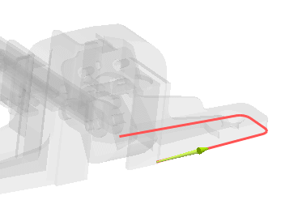
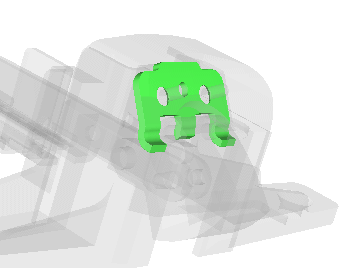
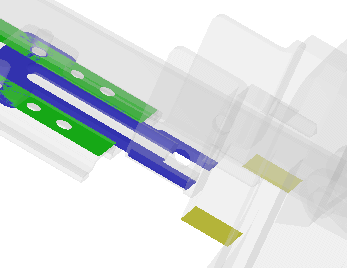

Emphasis enhancements
What is it?
Object emphasis in NX is enhanced. You can use the Emphasis Visualization preferences to:
-
View shaded geometry using the See-Thru display techniques.
-
View wireframe geometry using the color blending display techniques.
-
Apply See-Thru effects during model preview.
-
Emphasize the product interfaces, work parts, objects on the WCS work plane.

Product interfaces

Work part

Objects on a work plane
Why should I use it?
Use these display techniques to enhance the display of shaded geometry and wireframe objects for better visualization of NX parts.
Where do I find it?
|
Toolbar |
Visualization→Visualization Preferences |
|
Menu |
Preferences→Visualization |
|
Location in dialog box |
Visualization Preferences dialog box→Emphasis tab |